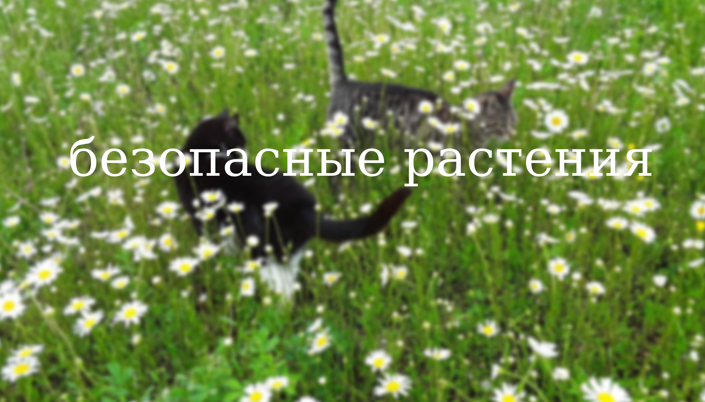
Хойя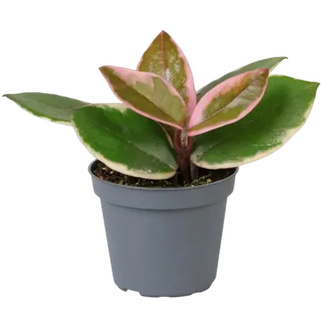 У этой лианы множество сортов, в том числе гибридных — с разными по форме и расцветке листьями и цветами.
Умеет «загорать»: на солнце ее листья приобретают красноватый оттенок
|
Калатея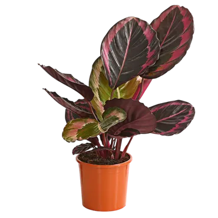 Есть множество сортов: от аккуратной «литтл принцесс», которая хорошо смотрится на столе или полке, до «орбифолии» с огромными листьями
|
Пилея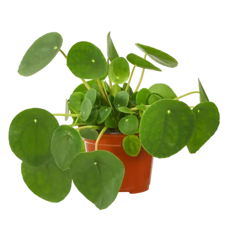 Компактная и не слишком капризная, приспосабливается к разным условиям. Чтобы кустик рос аккуратным, его нужно пару раз в месяц поворачивать другой стороной к свету
|
Хлорофитум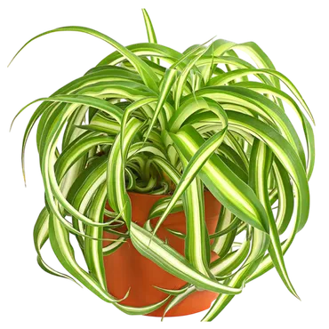 Беспроблемный — подойдет и для фитостены, и для озеленения открытого балкона или террасы
|
Пеперомия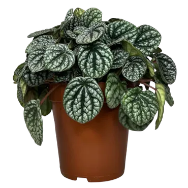 Милое и простое в уходе растение. Сорта очень разные — например, с серебристыми листьями или похожими на арбуз
|
Хамедорея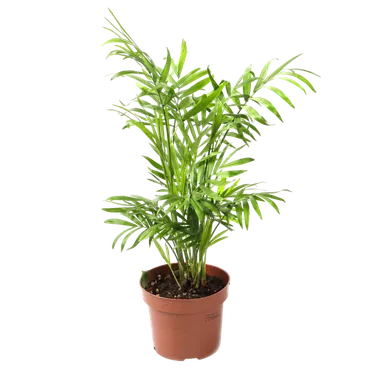 Высокая и пышная пальма — чтобы скрыться от всех
|
Бокарнея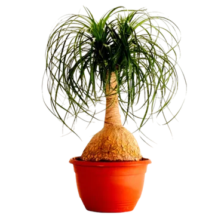 Смешная пальма из серии «посадил и забыл»: даже летом ее поливают раз в 10 дней
|
Хавортия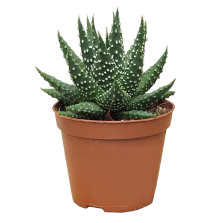 Легкий в уходе суккулент. Кошки вряд ли станут на него посягать: листья слишком колючие и жесткие
|
Платицериум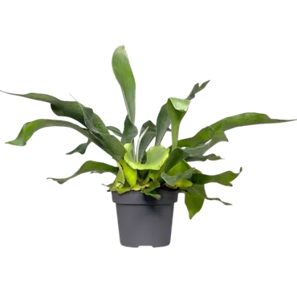 Папоротник с причудливыми листьями. Подойдет внимательным цветоводам: требователен к влажности и температуре воздуха, не терпит сквозняков и перемены мест
|
Эпифиллум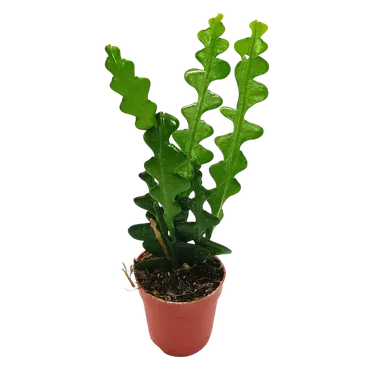 Тропический кактус с эффектными листьями. Его еще называют кактусом-орхидеей за яркие цветы
|
Орхидея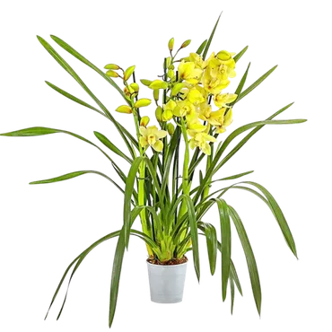 Любовь многих цветоводов. Если посадить в правильный грунт, обеспечить светом, питанием и не заливать, могут цвести постоянно
|
Бромелия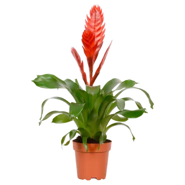 Простое в уходе растение, цветет несколько месяцев
|
Найти безопасные растения, которые украсят ваш дом без вреда для животных, можно найти на Plantis, KRAPIVA или Grinoteka.